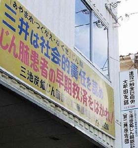

三池炭鉱じん肺訴訟原告団（資料提供：積さん）

●じん肺とは
●三池炭鉱じん肺訴訟原告団決意表明
●三井三池じん肺訴訟最終意見陳述「時効差別なき全員救済を」から抜粋
「私の主人は昭和57年65歳でじん肺になり、昭和61年69歳で死亡いたしました」「当初、じん肺の知識もなく、人から聞いてあちらこ
ちらの病院に行き診察を受けました。わずかな厚生年金では費用も追いつかず、年金証書を抵当にし、借金の上にも借金し雪ダルマ式に
増え、私も病人を置いて働きに行くという状態で」「じん肺という病気は治療すれば治ると思い、苦しむ主人を励ましながら、一日も
早くよくなることを念じ、一生懸命看病しました」「3年後にはもう器械の力を借りなければたくさんの空気も吸うことも出来なくなり、
食事も喉を通らず、点滴24時間になりました。人一倍肥えていた主人も半年で骨の上に皮を貼ったようにやせ細り・・・もだえ苦しみ
続けました」「くやしい、死にたくない、と言って亡くなった主人ですが、私は裁判を起こす事は思いもしませんでした。そんな事を
考える余裕はありませんでした。残された私は借金をかかえ、今後どうしたらよいか分かりませんでした。借金を返済するために、
食事を一日一食にし、昼は失業対策で働き、夜は映画館の掃除、昼の仕事が休みの時は、旅館の掃除・洗濯をして働き、泣いている
自由さえ許されませんでした」「じん肺は決して良くならず、死ぬるまで進む病気で、時効なんか言える病気ではなく、会社が全責任
を持って償い、あやまり、家族の生活保障をするのが当たり前ということは」
「被告三井鉱山株式会社及び被告三井石炭株式会社は、本件訴訟において、消滅時効を援用して自己の免責を主張しているが」「被告
らは、昭和10年代には、炭鉱じん肺の発生を知り、昭和20年代には、早期にかつ全面的にじん肺対策を実施しなければ、炭鉱じん肺が
将来大量に発生し続けるであろうことを充分に理解し、昭和30年代には、政府検診が実施され、その結果などによって、さらに強く右の
点が確認され、予防の必要性が声高に述べられるというえ状況に至っていた。にもかかわらず、被告らは、石炭増産と合理化のために
緊急を必要とされていた早期かつ全面的なじん肺対策を意図的に一貫して怠り続け、その結果が、その後のじん肺患者の大量発生へと
つながっていった」「要するに、労働者がじん肺になってもかまわない、悪化してもかまわないとの労務政策」「三池炭鉱は平成9年
3月に閉山したが、閉山退職から1年以内にじん肺が発見された原告は6名にも上がっているが、これらの者は在職中、定期健康診断を
通じて、じん肺と指摘されたことは一度もなかったのである。このほかにも、在職中は何も言われていないのに、退職から数年経過
した時点で、初めて、じん肺と指摘された原告は相当数存在している」「被告らが意図的に労働者にじん肺にかかっていることを秘匿し
あるいは症状の悪化を隠していた疑いが濃厚なのである」「原告らの中には、三井病院以外の医療機関でじん肺と初めて診断された者
が何人も存在している。在職中の定期健康診断では一度も指摘されたことはなかったのに、何も知らずに行った個人病院で珪肺と指摘
されて驚くのである」「被告らが原告ら労働者をじん肺に関する情報から意図的に遠ざけていたことを裏付けるものであって、極めて
悪質なものである」「このように、じん肺の発症や進行を容認していたうえで、組織的かつ意図的になされたものであることが明らか
であるから、時効の援用は権利の濫用として排斥されるべきである」
「炭鉱労働者は、戦後、日本復興の最大の担い手として、地下三千尺の高温と粉塵が舞い散る中で、途切れることの無い労働災害、
炭じん爆発などの恐怖と格闘しながら日本のエネルギーを支え、日本経済の復興と繁栄の基礎に大きく貢献してきました。人権を無視
する人を人と思わぬ労務政策は、数万の死傷者と共に、じん肺患者を閉山のその日まで出し続けました」「それでも、三井企業が救済
され、労働者は時効で切り捨てられるのでしょうか」「私共は、心からじん肺の根絶を願うものです。そのためには、じん肺裁判の
早期・全面解決を願ってやみません」
「私は昭和40年9月三井三池鉱業所四ツ山坑に入社。昭和61年5月、優良一般職社員として東京本社において表彰を受けたことがあり
ます。じん肺は昭和58年4月の企業検診で管理区分2の通知を会社よりもらいました。昭和62年4月、二人の子供たとちが親元を離れて
就職して行きました。妻と二人になり、生活するには多くの収入はいらないため、じん肺が進まぬように、職場配転し、坑外で10年間
働き、平成9年3月30日閉山を迎えました。失業保険受給期間中、企業面接を2度受けました。一つ目は食品会社。衛生上じん肺は良くな
いという理由で不採用になりました。二つ目は鉄骨会社で重労働のためじん肺患者は採用できないと通知がありました。再就職出来な
いため、職業訓練校造園科企業委託訓練生として、三井グリーンランド系列に再就職の道有りという条件にひかれ受講しました。しか
し、訓練とは名ばかりで、暑い日は下着を3枚も替えなければならない労働、誰もしたがらない排水口のドブさらえなど、一労働者に
組み込まれ働いていましたが、卒業間際になり採用取消を一方的に通達してきました。何のための企業委託訓練をしたのか判りません
でした。家のローンと生活費、不足分は退職金を切り崩して生活していました。私たち原告の中には年金に届かない多くの人たちが、
就職も出来ないでいます。年を取るにつれ、進行するじん肺のことを考えると不安で一杯になります。私たちは提訴から丸3年、原告の
うち15名が亡くなりました。空気は一杯あるのに自分の力では酸素を取り込むことが出来ずベッドの上でのたうちまわって亡くなって
いきました。三井は閉山でじん肺協定を破棄し、長い間働いた炭鉱労働者のじん肺患者をボロ布のように放り出し何の補償もしなかっ
た。無責任だと思います。生きているうちに時効差別のない全員救済を原告は望んでいます。また、国は国策で三池を閉山させた以上、
三井に和解のテーブルに早期に就くように働きかけをする責任が絶対あると原告は思います」
「被告のじん肺防止義務違反を考える上で、まず強調されなければならないのは、被告はじん肺について充分に知見を持っていたと
いうことである」「近代日本におけるじん肺問題は、まず三池炭鉱から始まった。明治21年に東京医事新誌に『三池炭坑夫の病原』が
発表され、三池炭鉱での『アントラコーシス』の患者が報告されている」「明治３２年には三池集治監の菊池医師が、三池炭鉱でのじ
ん肺を報告し、強く警鐘を鳴らした。事務所でのじん肺発生の統計も三池炭鉱で最も早く取られ始めた」「戦後になって、昭和２９年
まで労働省によるじん肺の巡回検診が行われたが、この巡回によっても三池炭鉱で多くのじん肺患者が発見された。この事態を受け、
昭和２９年には国会に三池の労使が呼ばれて証言をしている。昭和３０年にけい特法が制定されているが、三池のじん肺患者はその
契機になったのである。このけい特法の成立を受けて、昭和３０年から最初の３年間、政府検診がおこなわれた。この検診でも三池
炭鉱での患者は群を抜いていた」「さらに被告は患者発生だけでなく、坑内での粉じんの危険性も充分に認識していた」「被告は、
『じん肺患者は金属鉱山から来た者』などと根拠もないことを述べているが、そんなことを言いながら平然としておられるような状態
では決してなかったのである」「被告のじん肺対策は全く不十分であった」「湿式削岩機や散水、マスクについて三池炭鉱でも導入
そのものがきわめてお粗末であった「マスクが一応坑内夫に行き渡っても、これが実際に着用されることはなかった」「原告の中には
マスクをしていると『マスクをして仕事が出来るか』と叱責された者や、散水しようとすると仕事の邪魔になるといって嫌がられた者
すらいるのである。出来高賃金の体系も、現場でじん肺対策をとることを妨げる一因となった。現場での注意がなかっただけでなく、
じん肺教育も全く行われていなかった。甚だしいのは、炭をぬらすと品質が落ちるので水分が混じらないようになどという逆の教育
すら行われていた」「防じんのための手段が現場に備わっていても、作業を優先させてこれを実施することを許さない」「軽症の
じん肺は危険でも何でもない、粉じん対策は重要ではないという説明をしてそのような風潮を作り、作業を優先させる」「じん肺が
進行性の疾病で、一般に、離職後、被告と関係のない時間・場所で重症化するという性質を利用し、じん肺からことさら目をそむけ
続けた。このような『じん肺隠し』こそが、被告の『じん肺対策』だったのである。これらじん肺対策の手抜きと引き換えに、会社は
急テンポで合理化を実現していった」「被告のじん肺無視、じん肺隠しの政策は、平成９年の閉山まで続いた」「労働者支配に自信を
持っていたため、居直ってしまったのである」
「昭和29年3月の第19回国会で、三井鉱山の保安部長と三池炭鉱労組の副委員長が参議院労働委員会に参考人として呼ばれ、
三池におけるけい肺の発生状況と予防対策について説明を求められています」「国会に呼び出され、患者の発生やその予防対策に
ついて質問を受ければ、その解決に努めるのが世の中の常識です」「しかしながら、三井鉱山がとった対応は常識に反する行動でし
た」「第二組合を作って三池労組の分断に成功し、三池争議を力づくで押さえ込んだ会社は、国が打ち出した炭鉱合理化政策を追い風
に、合理化・機械化を一気に推し進めていったのです」「払いにはドラムカッターやローダーが入り、さらにはロードヘッダーも
入りました」「こうした発じん機械を操作するオペレーターの中には、水中眼鏡などを着けて、すさまじい粉じんから目を守ったり
していたようです」「出炭能率は飛躍的に増大しました。昭和36年には28トンだった一人当たり一月当たりの出炭量は、平成7年
には192トンにまで、実に7倍にまで跳ね上がっています。この7倍に跳ね上がった出炭量の増大は、そのまま一人当たりの発じん
量の７倍増を意味しています。だから、オペレーターは水中眼鏡を着けなければ機械の操作も出来なかったわけです」「もちろん、
昭和35年にじん肺法が成立し、47年には労働安全衛生法および同規則、53年には改正じん肺法が施行されて、翌54年には
粉じん障害防止規則が出来るという時代背景があります。被告らも、昭和20年代、30年代より少しは削岩機の湿式化にも取り組み
防じんマスクも支給していくようになりました」「しかし、その程度の取り組みでは合理化・機械化によって一人当たり出炭量が7倍
に増え、発じん量も７倍に増えた坑内粉じんには到底対応していくことができないのです」「それでやったやったと威張っているの
です」「機械化は進むが、それに伴う必要な粉じん対策の方はついてこなかったわけで、みせかけの防じん対策はあっても、それが
必要な働きをする体制になかったわけです」「要は行政取締りで問題にならない程度に形を整えただけのことで、だから散水設備が
本来の機能を発揮しなくても、合図や一声運動でマスク着用が出来なくても、原告らが次々にじん肺に罹患（りかん）しても、被告
らとしてはいっこうに構わなかったわけです。それが、昭和２９年に国会に呼ばれてじん肺対策について尋ねられた被告のその後の
対応の基本であり、本質でした」
「では、訴訟提起が遅れたことを原告に責めることができるでしょうか。患者らは、じん肺にかかったことで、会社に損害賠償を
請求できるなどと誰一人考えてはいなかったのです。在籍中には、少しでも早く治して、仕事に復帰し、在籍を切られないことに
精一杯だったはずです。当時、じん肺の行政認定がどのような意味を持つのか、三井はなにも教えてはくれなかったのです」「また
一方で原告らは、下請けで働いた者も含め、三井を誇りに思い、”天下の三井”でがんばろうという気持ちで一杯だったのです。
北海道でも、三井のバッジをずっと大事に扱っていた原告患者が多数いました。ましてや大牟田・荒尾では、家族だけでなく親族・
近所みな三井一色の世界です。その三井を被告として、裁判することに戸惑いがあって当然です。私はある患者が病院での証拠保全
手続きで、「じん肺がこんな苦しいもんだとは思わんかったもんなあ」と言って、提訴に踏み切った気持ちを語ったときのことが
忘れられません。三井らじん肺加害企業が患者から奪っていったものはあまりに大きいのです。だからこそ、原告らは命を引き替える
ようにして、必死の思いで、自分を雇用してきた企業を相手に訴訟に訴えたのです。ですから、原告らは決して『権利の上に眠って
いた』と非難されるいわれは絶対にないのです」「いうまでもなく大牟田・荒尾は、三井の拠点です。この地でのじん肺問題の解決は、
筑豊や北海道に全面的に広がります。そして、三井がいかなる企業論理で炭鉱産業を経営してきたかは、この三井三池で最も明らかに
なったはずです。生産第一主義のもと、労働者の健康を二の次にして、労働者の過酷な粉じん労働の上で莫大な利益を得てきたのです」
「かつて下請けであった三井建設が解決したのに、なぜ三井本体がじん肺を解決出来ないのか。改めて大牟田・荒尾の町に問うことに
なります」
●じん肺訴訟裁判の経過
平成１３年７月２０日
平成１３年１２月１９日
平成１４年８月１日
平成１４年８月２日
平成１４年８月９日
|